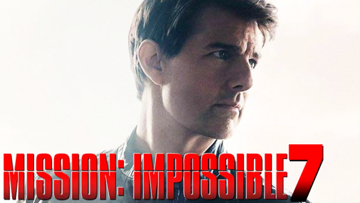

John Wick: Chapter 4
Fecha de estreno: 27 mayo 2022
Sabemos que Parabellum terminó con Wick teniendo que huir, con la entrada prohibida al hotel The Continental (que vamos a poder explorar más a fondo en su serie) y descubriendo que Winston lo había traicionado, así que ahora tiene que luchar por su vida y reunir a los pocos aliados que le quedan para terminar con todo esto de una vez por todas, pero no sabemos a dónde lo va a llevar esta nueva historia.
Misión imposible 7
Fecha de estreno: 30 septiembre 2022
Misión Imposible 7 cuenta en su reparto con Hayley Atwell, Pom Klementieff y Esai Morales como los nuevos fichajes de la saga. En la séptima entrega repiten Rebecca Ferguson como Ilsa Faust, Simon Pegg como Benji, Angela Bassett como Erica Sloan, Vanessa Kirby como Alanna Mitsopolis y Ving Rhames como Luther.
Agentes 355
Fecha de estreno: 21 enero 2022
Una agente de la CIA une fuerzas con una agente alemana, una especialista en informática y una psicóloga para recuperar un arma secreta que ha caído en manos de unos peligrosos mercenarios.